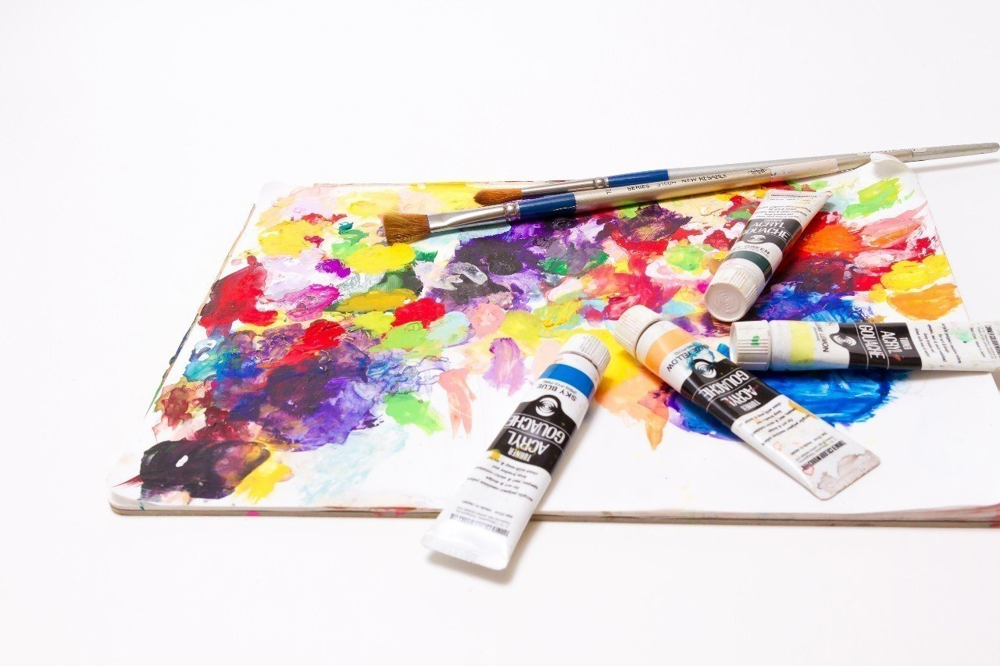

下北沢の駅を降りて20分ほど歩いたところに、レトロな雰囲気の洋食屋がある。ここでよく俺はオムライスを注文していた。
大人なのに随分と子どもっぽい食べ物を食べるんだなって？ じゃあ一度騙されたと思ってあなたも食べてみればいい。きっとここ以外でオムライスを注文することはできなくなるだろうから。
腹を満たした俺は、あるアトリエへと向かっていた。その小さな空間には、雑多に並べられた絵の数々があった。
ここのオーナー兼画家であるじいさんは、近所の子どもたちや老後の楽しみに習いに来ているお年寄りたちに絵を教えながら、自由気ままに第二の人生を送っていた。
俺も小学生の頃ここに通っていて、やめた後もちょくちょく足を運んでいた。
カランカランとドアベルが鳴る。
「お邪魔しまーす」
じいさんは俺に背を向けて、何やら絵を描いている。
「またお前か。大学の帰りか？」
「いや、今日は休み。暇だからいつもの店でオムライス食ってきた」
「そりゃいいな。でもわしは今、お前と違って忙しいんだ。さあ、出てった出てった」
じいさんはキャンバスとにらめっこしていて、こちらを見ようとしない。
ちょうど夕方のオレンジ色の光が窓から差し込んでいる。
「そんなこと言うなよ。静かにしているからさ、いつものように絵見てっていい？」
「お前も飽きないな。30分だけだぞ。子どもたちが来ちまうからな」
じいさんは基本的に人とつるまないたちだが、自分の絵に興味を持った人間とは不器用なりにその繋がりを保とうとしていた。
じいさんとの接点は絵しかなかったが、俺は勝手にじいさんのことを祖父代わりにしていたのかもしれない。
じいさんの絵は油彩画が多く、その印象は繊細かつ優しい雰囲気があった。
絵の題材は、世界の風景画が多い。それはじいさんは若い頃、世界中を旅するほどの大の旅行好きだったからだ。
でも徐々に体は老いていき、体力的にも旅をするのが厳しくなっていた。そりゃそうだ。もう80歳になろうとしていたのだから。
そんなじいさんと違って、俺は絵を描くことには関心が向かなかった。
絵を鑑賞することは今でも好きだが、どこか現実的で、絵を描くことだけで生活できるのはほんの一握りの人間だけだと小学生の頃から思っていた。
だから絵よりも勉強に励み、着々といい大学、いい企業に入るためだけに努力してきた。
つい先日、第一希望の企業から内定が出て、とりあえず安心した俺は入社までに自分の時間を楽しもうと思った。その内の1つがじいさんのアトリエを訪れることであった。
また別の日。今度は絵画教室が休みの日にアトリエに行ってみた。
じいさんは土日であってもアトリエに足を運び、毎日絵を描き続けていた。この年齢だときついはずなのに、絵に接しない日は全くといっていいほどなかった。
この日じいさんは俺が顔を見せると、ハーブティーを淹れてくれた。その手は絵具で所々汚れていた。
「もうすぐ大学も卒業だろう。どこか旅にでも行くのか？」
「うん。卒業旅行ね。まだ行き先は決めてないけど行くつもり」
「そうか。旅はいいもんだぞ。体の自由がきくうちに色んな場所に行ってみな。こんなに世界は広いんかと思うぞ。まるで世界を知らない少年のような気持ちになる」
まさしくじいさんは少年の目をしながらそう話す。本当に旅好きなんだと思った。
そんなじいさんから何度も耳にしたことのある旅話を聞いた後、今の悩みを打ち明けた。
「精一杯勉強してここまできたけど、時々本当に自分の人生はこれでいいのかって考えてしまうんだ。ほかにもっとやりたいことがあるんじゃないかって。自分でもよく分からなくなる」
じいさんは少し考えていたが、
「それはお前自身で探して見つけるしかない。だから、わしに分かるはずがないな。さて、そろそろ作業に戻るから、それ飲んだらぼちぼち帰っておくれ」
と素っ気なく言った。
はあ。じいさんは自分が分からないこととなるといつもこうなんだ。まあいいや。自分でも分からないことを他人であるじいさんが分かるはずがない。
俺はコップに残っているハーブティーを飲み干すと、そそくさと雨が降っている街へと出ていった。
それからしばらく経って、季節は春になった。
俺は大学の友人たちと最後の学生生活を楽しむことに夢中で、じいさんのアトリエからは遠のいていた。
来月からは東京を離れるので、そう簡単にあの場所には行けない。だから大学の卒業式の後、学生最後の日にじいさんと会うことにした。
今まで何度となくあのアトリエに訪れてはじいさんの絵を見てきた。あそこが小さな美術館で毎回金を払っていたとしたら、どのくらい使っていただろう。
「お邪魔します」
じいさんはせっせと絵画を整理していた。アトリエは寂しい雰囲気だった。
「おう、お前か。どうした、スーツなんか着おって」
「今日卒業式だったんだ」
「そうか。立派になったもんだな」
じいさんは穏やかに微笑んでいた。
「それで、今日はもうじき東京を離れることもあって、今までお世話になったお礼にと……」
来る途中で買った手土産を渡す。
「何を改まって。まあ、ゆっくりしていきなさい」
珍しくじいさんは絵を描いていなかった。壁に飾られていた絵の数々もほとんどどこかに消えていた。
「なんか雰囲気変わった？」
じいさんが出してくれたダージリンを飲みながらそう聞く。
「ああ。実を言うと、絵は一旦やめにしようと思っているんだ。お前と一緒で卒業さ」
思わずじいさんの目をはっきりと見た。あんなに絵が好きなじいさんがやめるとは何かあったのか。
じいさんは俺の様子を見て、
「言っておくが、わしはどこも体は悪くないぞ。絵が嫌いになったわけでもない。絵画教室をやめたからって食いっぱぐれになるわけでもないし、ただの気まぐれじゃ」
と答えたが、すぐにそれが嘘だと分かった。
でも本当の理由は聞いちゃいけないような気がした。
「ここのアトリエはどうするの？」
「そりゃ閉めることになるだろうな。息子も絵を描くものだから、使ってくれないかちょいと相談してみようと思っておる」
何か言いたい気持ちを必死に抑えた。もう大人なんだ。「まだやめないで」とか言ってはいけないと思った。
モヤモヤした気持ちを抱えていると、じいさんが続ける。
「お前はわしの絵の一番のファンだった。だから、わしは最後にお前のために絵を描いた」
そう言うと立ち上がって、あるキャンバスを持ってきた。じいさんは俺の顔を見ながら、キャンバスに覆い被さっている布を取った。すると、そこにはアトリエのドアを開いた俺の姿があった。
そうか。じいさんは数えきれないほどこの光景を見続けてきたのか。
「いつか言っておったな。今まで努力してきたはずなのに、本当にこの道でよいのか分からんと」
「うん」
言葉少なに答える。
「わしもこれまで絵のことばかり考えてきた。でも、お前と同じようにこの道でよかったのかは全く分からない。だからこの道が自分にとって正しかったと思えるように、周りにあるほかのものに目を向けようと思った」
小学生の時と同じまなざしでその話を聞いていた。
「だから、一旦わしは絵から離れる。好きなものっていうのは自分を夢中にさせてくれる代わりに、ほかのものに目を移すことを許してはくれん」
俺は小さく頷く。じいさんは続ける。
「もしお前も忙しくなってしんどくなった時があったら、この絵を見てほしい。旅と一緒で、寄り道することも人生には必要なんだ」
その目は既にじいさんの言う“ほかのもの”を見ている目であった。その時、俺はじいさんの後ろに旅支度を済ましたカバンが置いてあることに気がついた。
その様子を見て、じいさんは気づいてしまったかという表情をした。
すると、照れ隠しをするかのように
「さて、オムライスでも食いに行くか」
と、いつもの口調でそう言った。